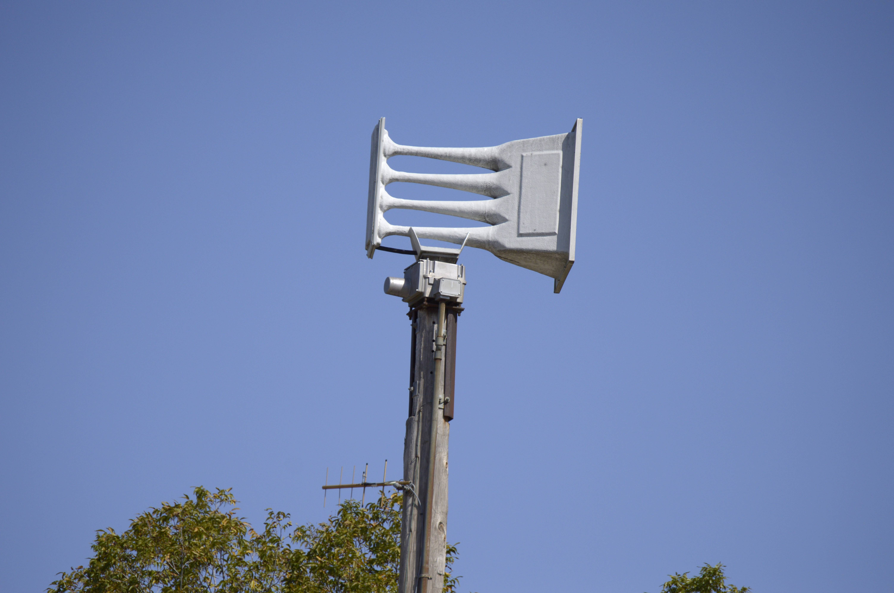

Whelen WPS-4004

This Whelen WPS-4004 is located at Tulsa Fire Station 32.
GPS cordinates: 36.031685, -95.909934
This siren runs on an Analog ESC-864 (Dual Tone), and peaks at 812/975 Hertz.
Siren Test Audio (10/9/2024):
Your browser does not support the audio element.